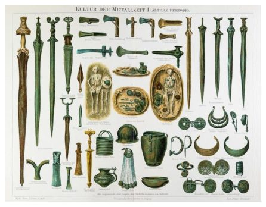
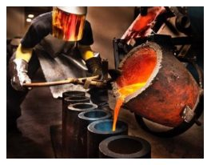
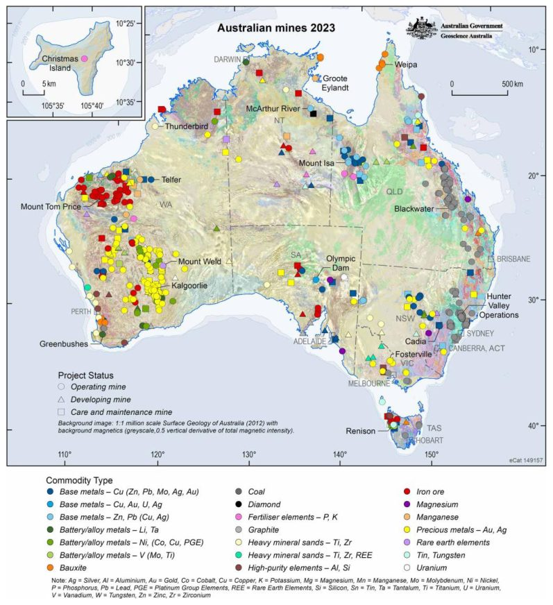

2.1 History of Metals
The discovery and use of metals have shaped human civilisation through distinct periods of technological and cultural progress.
| Period | What happened |
|---|---|
| Prehistoric / Copper Age (from about 5000 BCE) | Native metals like gold, silver and copper were used in their natural state because they are malleable and occur in fairly pure form. They were made into tools, ornaments and weapons. Copper was among the first metals shaped by hammering and later smelting. |
| Bronze Age (from about 3300 BCE) | Bronze, an alloy of copper and tin, was harder and more durable than stone or pure copper, leading to advances in agriculture, warfare and trade. |
| Iron Age (from about 1200 BCE) | Iron became the main material for tools and weapons. Smelting iron needed high temperatures, achieved with innovations such as bellows. Steel (iron + carbon) was later developed, improving strength. |
| Middle Ages to Industrial Revolution | Lead, zinc and mercury came into use; alchemy laid the groundwork for metallurgy; the Industrial Revolution (18th–19th centuries) was driven by mass-produced iron, steel and aluminium. |
| Modern metallurgy (20th–21st centuries) | New metals and alloys with special properties, such as titanium for aerospace and rare earth metals for electronics. |


2.2 Native Metals versus Minerals
Some metals exist in nature in their pure form (native metals), but most are extracted from minerals or ores.
| Metal | Found as |
|---|---|
| Zinc (Zn) | |
| Platinum (Pt) | |
| Iron (Fe) | |
| Gold (Au) | |
| Copper (Cu) | |
| Silver (Ag) | |
| Aluminium (Al) |
Unreactive metals (gold, platinum, silver, copper) can be found native. Copper and silver are also mined from minerals, e.g. chalcopyrite. Reactive metals (zinc, iron, aluminium) are only found combined in minerals.
| Metal | Mineral | Formula |
|---|---|---|
| Copper | Chalcopyrite | CuFeS2 |
| Calcium | Limestone | |
| Iron | Haematite | Fe2O3 |
| Iron | Magnetite | Fe3O4 |
| Lead | PbS | |
| Mercury | Cinnabar | HgS |
| Titanium | TiO2 | |
| Aluminium | Bauxite | Al2O3 |
| Zinc | ZnS | |
| Tin | Cassiterite |
Type formulas without subscripts, e.g. CaCO3. Formulas are case-sensitive.
2.3 Australia's Mining History and Modern Industry
Australia is one of the world's largest producers of minerals, with a mining history going back to the 1850s Gold Rush, which brought a surge of immigrants and great wealth. At its height, Australia produced 40% of the world's gold. Today minerals remain a cornerstone of the nation's wealth.
With over 350 operating mines, Australia produces 19 significant minerals, including bauxite (aluminium ore), iron ore, lithium, gold, lead, diamonds, rare earth elements, uranium and zinc, plus mineral sands (ilmenite, zircon, rutile), black coal, manganese, antimony, nickel, silver, cobalt, copper and tin. Mining happens in every state, the Northern Territory and offshore territories such as Christmas Island; the ACT has only construction quarries.

Metals are essential in everyday life: in construction (bridges, skyscrapers), transport (cars, planes, trains), electronics (wiring and circuits), packaging (aluminium, steel), jewellery (gold, silver), medicine (surgical instruments, implants) and renewable energy (solar panels, wind turbines).
Write two uses of each metal and Australia's world ranking in its production: aluminium, silver, gold, iron, copper, lead, titanium, zinc, tin.
Example answers (rankings change from year to year; check Geoscience Australia for current figures):
| Metal | Uses | Approx. world ranking |
|---|---|---|
| Aluminium | drink cans, foil, aircraft, window frames | bauxite: 1st |
| Silver | jewellery, electronics, mirrors | about 5th |
| Gold | jewellery, electronics, investment | 2nd–3rd |
| Iron | steel for construction, cars, tools | iron ore: 1st |
| Copper | electrical wiring, plumbing | about 6th–8th |
| Lead | car batteries, radiation shielding | 2nd |
| Titanium | aircraft, artificial joints, white paint (TiO2) | 1st–2nd (mineral sands) |
| Zinc | galvanising steel, brass, batteries | 2nd–3rd |
| Tin | solder, tin-plated cans | about 8th |
Test your understanding
What was the key technological advance that defined the transition from the Bronze Age to the Iron Age?
The Age is characterised by the widespread use of an alloy of copper and tin, which is harder and more durable than pure copper.
Explain why some metals like gold and silver were used in their native state in prehistoric times.
They are unreactive, so they occur naturally in a fairly pure (native) form and didn't need extracting from an ore. They are also malleable, so they could be hammered into shape without smelting.
An ore must contain enough of a valuable mineral to make extraction economically viable; many minerals (e.g. quartz) are not ores.
- List two industrial uses of aluminium and give Australia's world ranking in its production.
- Identify two key advantages of bronze tools compared to pure copper tools.
- E.g. aircraft and vehicle bodies, drink cans and foil, window frames, power lines. Australia is the world's largest producer of bauxite (about 1st) and a top producer of alumina.
- Bronze is harder and more durable (holds a sharp edge and resists wear and corrosion better), which led to better tools and weapons and advances in agriculture, warfare and trade.
If Australia produced 40% of the world's gold during the Gold Rush, and the global output was 1000 tonnes, how much gold did Australia produce?
40% × 1000 t = 0.40 × 1000 = 400 t.
Compare the properties of titanium and iron that make them suitable for aerospace and construction respectively.
Titanium has a very high strength-to-weight ratio (strong but low density), resists corrosion and copes with high temperatures: ideal for aircraft. Iron (as steel) is strong, hard, abundant and cheap, so it suits large structures like bridges and buildings, where weight matters less.